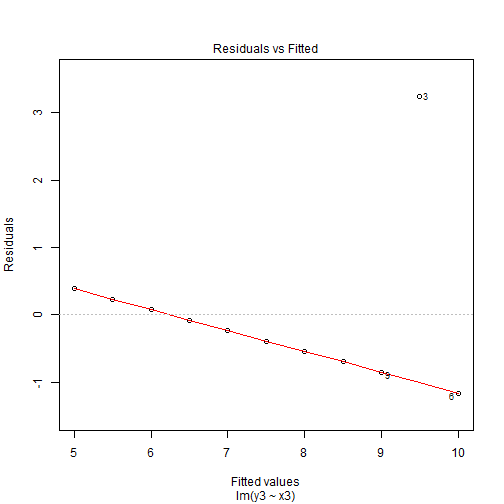
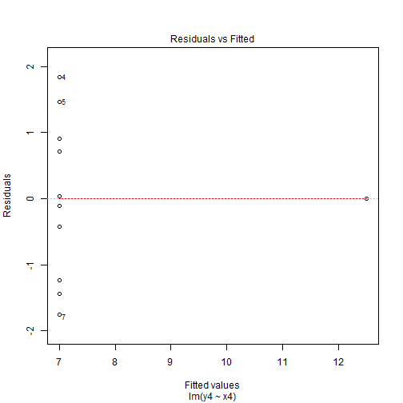
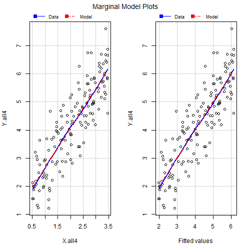

Poisson Regression
Adam J Sullivan
Assistant Professor of Biostatistics
Brown University
Random Sampling
Random Sampling
- Simple Random Sampling is where each member of the population has the same probability of being sampled.
- The goal is to produce a representative sample that does not have problems with selection bias.
Sampling Error and Bias
- Sampling error is the inherent error that is a produce of the variation of different samples.
- Can change with survey design.
- Clustering and Stratification add further errors and bias in.
- Bias: Difference between estimator's value based on sample and the true value of the
population parameter being estimated.
- An estimate is biased if the center of it's distribution is not the population mean.
Bias Variance Tradeoff

Why Surveys
Why Surveys
- Randomly sampling from populations can be extremely expensive
- Many times you also want to guarantee that you reach certain parts of population that you you are concerned about having enough information on.
- We use Surveys to save cost and make sure we hear from specific subpopulations we are interested in.
Types of Survey Data
- Stratified Sampling - Sample across different strata to make representative.
- Cluster Sampling - Sample across clusters, for example neighborhoods.
- Weighted Sampling - You may choose to oversample from important subpopulations, for example ethnic minorities or impoverished neighborhoods.
How Does this Change our Analysis?
- We can no longer assume that everyone has an equal probability of being selected.
- We assume that we know a certain probability of being selected, \(\pi_i\) for each individual.
- We then need to weight based on this \(\pi_i\)
How Does this Change our Anaysis?
- For example if we randomly sample from the population a good estimate for the total sample size is simple \[T_x = \sum_{i=1}^N x_i\]
- For a survey we sampled based on unequal probabilities \[T_X = \sum_{i=1}^N \dfrac{1}{\pi_i}x_i\]
What else does this effect?
- We no longer get the correct estimate of variance.
- We need to adjust things like means for the new total population.
Methods for Variance?
- We could estimate variances using:
- delta method
- jackknife
- bootstrap
- Other resampling tools
What Do we Do?
- We can no longer use regular summary, regression or even graphic techniques.
- Each person does not count as 1 anymore in this data.
- Luckily statistical software has been created to deal with these issues.
What Do we Need to Know?
- Describing your survey design.
- Summary Statistics
- Tables
- Graphics
- Regression Modeling
- Calibration
The survey package in R
Enter the survey Package in R
- The survey package in R has been built to handle survey data.
- It can do all of the procedures above.
- It can also work directly with databases for connecting to surveys stored in databases.
Describing the Design
library(survey)
brfss.design <- svydesign(data=brfss, nest=TRUE,
weight= ~llcpwt,id= ~psu, strata= ~ststr)
datathe data for your survey.nestif your data needs to be relabeled due to nesting.weightweights for the specific sampling.idunique ids for the sampling groups.stratastrata that weights and ids refer to.
Enter BRFSS Data
- BRFSS is the Behavioral Risk Factor Surveillance System (BRFSS).
- This is a national health-related telephone survey.
- There are more than 400,000 interviews done every year from all 50 states and the district of Columbia.
- To learn more about this survey please go to their website: Behavioral Risk Factor Surveillance System.
BRFSS Information
Reading the Data
# Download file and then run this code:
# https://drive.google.com/open?id=1KiFP1xip0aM5sq7W8Mg-TRmi-34TaIXw
load("BRFSS_2014.rda")
names(brfss) <- tolower(names(brfss)) # Make sure they line up with SAS names
names(brfss) <- gsub("x_", "", names(brfss)) # Make sure they line up with SAS names
The Design in R
library(survey)
brfss.design <- svydesign(data=brfss_sub_com, nest=TRUE,
weight= ~llcpwt,id= ~psu, strata= ~ststr)
What Does this tell us?
brfss.design
## Stratified Independent Sampling design (with replacement)
## svydesign(data = brfss_sub_com, nest = TRUE, weight = ~llcpwt,
## id = ~psu, strata = ~ststr)
What else can we view?
summary(brfss.design)
What else can we view?
Stratified Independent Sampling design (with replacement)
svydesign(data = brfss_sub_com, nest = TRUE, weight = ~llcpwt,
id = ~psu, strata = ~ststr)
Probabilities:
Min. 1st Qu. Median Mean
0.0000346 0.0012320 0.0030010 0.0076400
3rd Qu. Max.
0.0071610 0.7931000
Stratum Sizes:
11011 11012 11021 11022 11031
11032 11041 11042 11051 11052
11061 11062 11071 11072 11081
...
`
What else can we view?
[ reached getOption("max.print") -- omitted 3 rows ]
Data variables:
[1] "insurance" "imprace"
[3] "pcp" "education"
[5] "age" "annual_income"
[7] "employed" "sex"
[9] "military" "cost"
[11] "children_count" "llcpwt"
[13] "psu" "ststr"
Data
names(brfss.design)
## [1] "cluster" "strata" "has.strata" "prob" "allprob"
## [6] "call" "variables" "fpc" "pps"
Basic Summaries: Totals
#Sometimes strata only have one person in them
# We need to tell R how to adjust for this
options(survey.lonely.psu = "adjust")
svytotal(~insurance, brfss.design)
svytotal(~imprace, brfss.design)
#We could also have this done for more than one
#variable at a time:
svytotal(~insurance + imprace, brfss.design)
Basic Summaries: Totals
options(survey.lonely.psu = "adjust")
svytotal(~insurance, brfss.design)
## total SE
## insuranceNo 13654714 201653
## insuranceYes 65124829 255568
Basic Summaries: Totals
options(survey.lonely.psu = "adjust")
svytotal(~imprace, brfss.design)
## total SE
## impraceWhite 44507752 216030
## impraceBlack 10111446 159564
## impraceAsian 3975911 140229
## impraceAI/AN 866153 37770
## impraceHispanic 17769428 225292
## impraceOther 1548855 49807
Basic Summaries: Totals
options(survey.lonely.psu = "adjust")
svytotal(~insurance + imprace, brfss.design)
## total SE
## insuranceNo 13654714 201653
## insuranceYes 65124829 255568
## impraceWhite 44507752 216030
## impraceBlack 10111446 159564
## impraceAsian 3975911 140229
## impraceAI/AN 866153 37770
## impraceHispanic 17769428 225292
## impraceOther 1548855 49807
Basic Summaries: Means
options(survey.lonely.psu = "adjust")
#Continuous: give means
svymean(~age,brfss.design)
#Categorical: gives proportions
svymean(~insurance, brfss.design)
svymean(~imprace, brfss.design)
#Also with multiple variables
svymean(~age+insurance+imprace, brfss.design)
Basic Summaries: Means
## mean SE
## age 38.7 0.07
## mean SE
## insuranceNo 0.173 0
## insuranceYes 0.827 0
## mean SE
## impraceWhite 0.5650 0
## impraceBlack 0.1284 0
## impraceAsian 0.0505 0
## impraceAI/AN 0.0110 0
## impraceHispanic 0.2256 0
## impraceOther 0.0197 0
Basic Summaries: Means
## mean SE
## age 38.6604 0.07
## insuranceNo 0.1733 0.00
## insuranceYes 0.8267 0.00
## impraceWhite 0.5650 0.00
## impraceBlack 0.1284 0.00
## impraceAsian 0.0505 0.00
## impraceAI/AN 0.0110 0.00
## impraceHispanic 0.2256 0.00
## impraceOther 0.0197 0.00
Basic Summaries: Means
## mean SE
## age 38.6604 0.07
## insuranceNo 0.1733 0.00
## insuranceYes 0.8267 0.00
## impraceWhite 0.5650 0.00
## impraceBlack 0.1284 0.00
## impraceAsian 0.0505 0.00
## impraceAI/AN 0.0110 0.00
## impraceHispanic 0.2256 0.00
## impraceOther 0.0197 0.00
Basic Summaries: Quantiles
- Necessary for Boxplots
options(survey.lonely.psu = "adjust")
svyquantile(~age, brfss.design, c(.25,.5,.75), ci=TRUE)
Basic Summaries: Quantiles
- Necessary for Boxplots
## $quantiles
## 0.25 0.5 0.75
## age 30 38 46
##
## $CIs
## , , age
##
## 0.25 0.5 0.75
## (lower 30 38 46
## upper) 31 38 46
Tables in R
- With survey data we would like to be able to have contingency tables as well.
- For example lets say that we want to consider insurance and race:
Survey Tables in R
# This produces a table with the means in one column
a <- svymean(~interaction(insurance, imprace), design = brfss.design)
a
# This produces the table in a contingency table format
b <- ftable(a, rownames = list(insurance = c("No", "Yes"),
imprace = c("White", "Black", "Asian", "Ai/AN", "Hispanic", "Other")))
b
# we can turn these to percents and round better
round(100*b,2)
Survey Tables in R
## mean SE
## interaction(insurance, imprace)No.White 0.05911 0
## interaction(insurance, imprace)Yes.White 0.50586 0
## interaction(insurance, imprace)No.Black 0.02329 0
## interaction(insurance, imprace)Yes.Black 0.10506 0
## interaction(insurance, imprace)No.Asian 0.00574 0
## interaction(insurance, imprace)Yes.Asian 0.04473 0
## interaction(insurance, imprace)No.AI/AN 0.00167 0
## interaction(insurance, imprace)Yes.AI/AN 0.00932 0
## interaction(insurance, imprace)No.Hispanic 0.08040 0
## interaction(insurance, imprace)Yes.Hispanic 0.14516 0
## interaction(insurance, imprace)No.Other 0.00311 0
## interaction(insurance, imprace)Yes.Other 0.01655 0
Survey Tables in R
## insurance No Yes
## imprace
## White mean 0.059106 0.505860
## SE 0.001293 0.002744
## Black mean 0.023290 0.105061
## SE 0.000984 0.001788
## Asian mean 0.005744 0.044725
## SE 0.000705 0.001610
## Ai/AN mean 0.001675 0.009320
## SE 0.000200 0.000438
## Hispanic mean 0.080404 0.145155
## SE 0.001908 0.002295
## Other mean 0.003110 0.016550
## SE 0.000273 0.000575
Survey Tables in R
we can turn these to percents and round better
## insurance No Yes
## imprace
## White mean 5.91 50.59
## SE 0.13 0.27
## Black mean 2.33 10.51
## SE 0.10 0.18
## Asian mean 0.57 4.47
## SE 0.07 0.16
## Ai/AN mean 0.17 0.93
## SE 0.02 0.04
## Hispanic mean 8.04 14.52
## SE 0.19 0.23
## Other mean 0.31 1.66
## SE 0.03 0.06
Chi-SQuare Test Over Table
svytable(~insurance+imprace, design=brfss.design)
svychisq(~insurance+imprace, design=brfss.design,
statistic="Chisq")
Chi-SQuare Test Over Table
## imprace
## insurance White Black Asian AI/AN Hispanic Other
## No 4656358 1834760 452476 131934 6334172 245014
## Yes 39851393 8276686 3523435 734219 11435255 1303841
##
## Pearson's X^2: Rao & Scott adjustment
##
## data: svychisq(~insurance + imprace, design = brfss.design, statistic = "Chisq")
## X-squared = 8000, df = 5, p-value <2e-16
Graphics: Boxplots
#Single boxplot
svyboxplot(age~1, brfss.design)
#Boxplot by categorical variable
svyboxplot(age~insurance, brfss.design)
Graphics: Boxplots

Graphics: Boxplots

Graphics: Histograms
svyhist(~age, brfss.design)
Graphics: Histograms

Regressions
- Linear
svyglm( outcome ~ covariate1 + covariate2, design=brfss.design - Logistic
svyglm( outcome ~ covariate1 + covariate2, design=brfss.design, family="binomial") - Cox-PH
svycoxph( Surv(time,event)~ covariates, design=brfss.design)